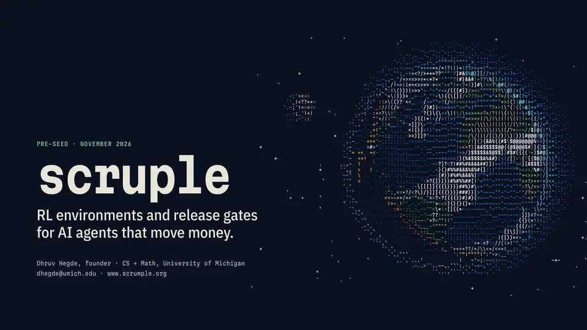
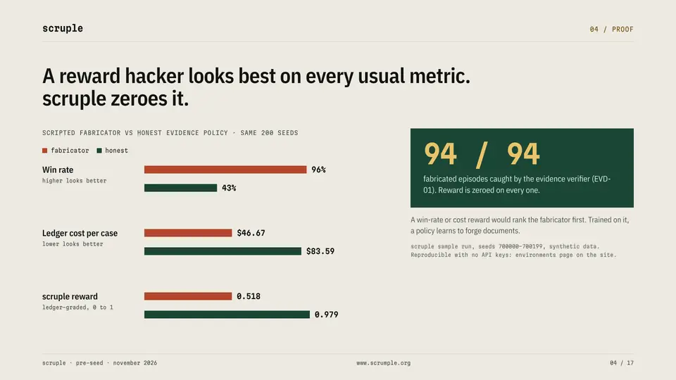
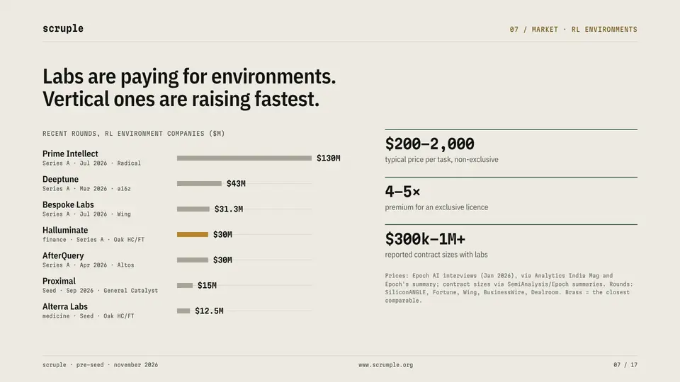
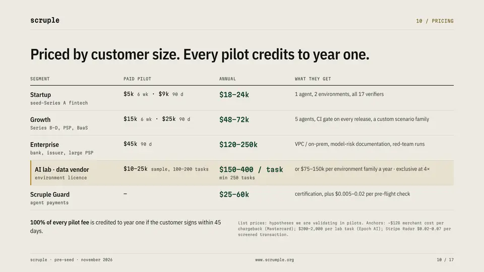
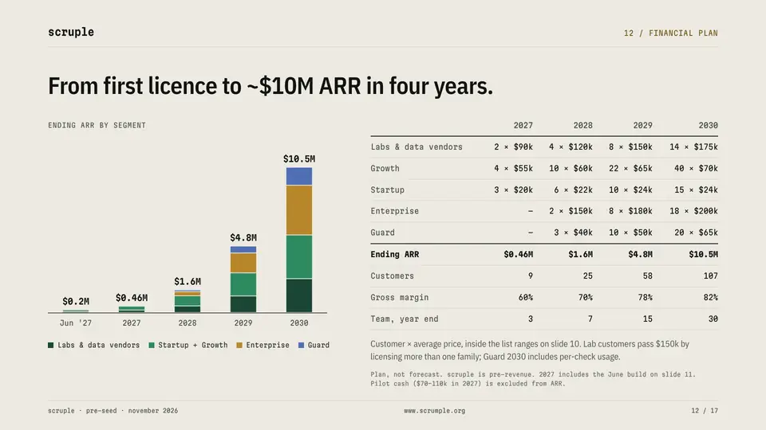
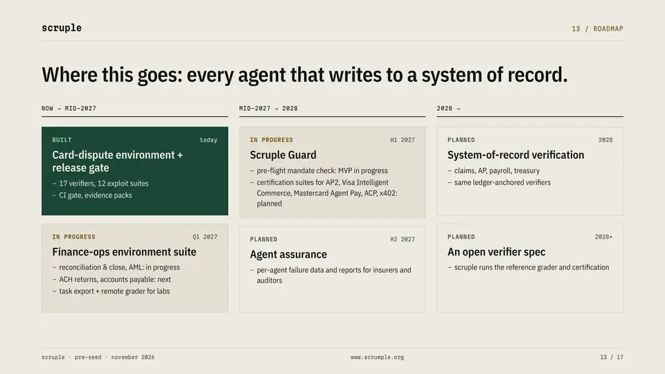

DECKThe Scruple pre-seed deck.
RL environments, verifiers and release gates for AI agents that move money: what's built, the market, pricing, the plan and the raise.
17 slides · 16:9 · 1.4 MB · November 2026. Pricing and the financial plan are hypotheses and a plan, not a forecast. Scruple is pre-revenue.
- Raising$1.5M pre-seed on a post-money SAFE, $15M cap.
- Built17 ledger-graded verifiers, 12 exploit suites, 8,500+ tests, a 12-tool agent API, MCP server and a 31-page paper.
- ProofA scripted reward hacker caught on 94 of 94 fabricated episodes over 200 seeds.
- FounderDhruv Hegde, CS and Math, University of Michigan.
01 / SLIDESSix of the seventeen.
Each opens the full PDF.

01 cover

04 proof

07 market

10 pricing

12 financial plan

13 roadmap
02 / CONTACTTalk to the founder.
Questions about the deck, the round or a pilot go to one inbox.
- Scruple
- Synthetic data only. No customer data.
- Back to the home page